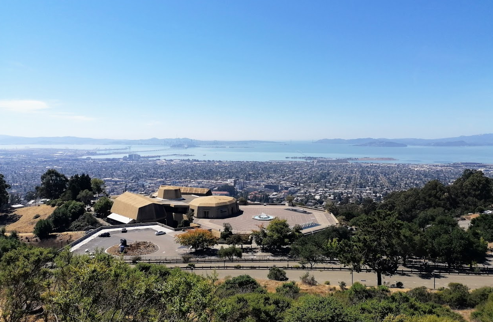

Talks
Invited lectures, seminar talks, conference presentations, and posters.

Invited
-
07/2026
Spectral Geometry of Deformed Normal Homogeneous Spaces
Virtual Seminar on Geometry with Symmetries, Online. -
01/2026
AI-Assisted Research in (pure) Math
Graduate Training Workshop, Isaac Newton Institute, Cambridge, UK.
slides -
09/2025
Researching with Thinking Models: AI-Assisted Paths in Mathematics
Annual 2025 OeMG-DMV Meeting, Linz, Austria. -
02/2024
Spectral Geometry (five-day lecture series)
University of Malaga, Spain. -
11/2023
Spectral Geometry of Aloff-Wallach Spaces
Oberseminar Geometrie und Topologie, University of Stuttgart, Germany.
Conferences
AI in Spectral Geometry
- 04/2026
Spectral Geometry on Naturally Reductive Spaces
-
09/2025
Annual 2025 OeMG-DMV Meeting, Linz, Austria.
-
09/2025
Differential Geometry & Applications, Masaryk University, Brno, Czech Republic.
slides -
03/2025
The Dirac Operator with Skew Torsion on Naturally Reductive Spaces. National University of Cordoba, Argentina.
-
10/2024
Graduate Seminar, Simons Laufer Mathematical Sciences Institute, Berkeley, USA.
-
06/2024
41. Sueddeutsches Kolloquium ueber Differentialgeometrie, Goethe University Frankfurt, Germany.
Geometry of Aloff-Wallach Spaces
-
08/2023
Prospects in Geometry and Global Analysis, Castle Rauischholzhausen, Germany.
-
05/2023
Spinorial & Octonionic Aspects of G2 and Spin(7) Geometry, BIRS, Banff, Canada.
Posters
-
08/2023
Geometry of Aloff-Wallach Spaces. Workshop on Curvature and Global Shape, University of Muenster, Germany.
-
08/2023
Geometry of Aloff-Wallach Spaces. Prospects in Geometry and Global Analysis, Castle Rauischholzhausen, Germany.